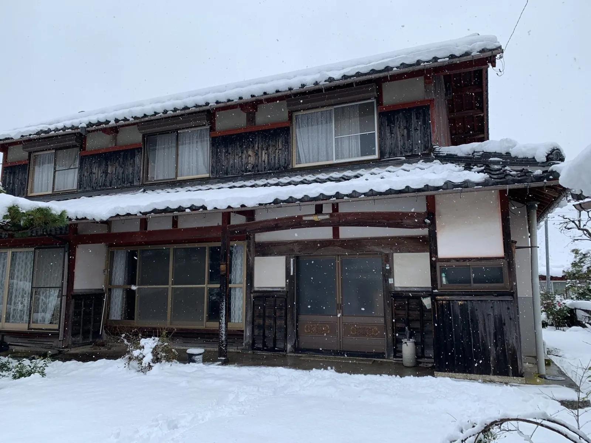
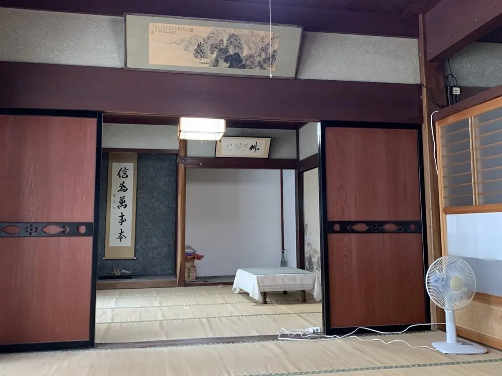
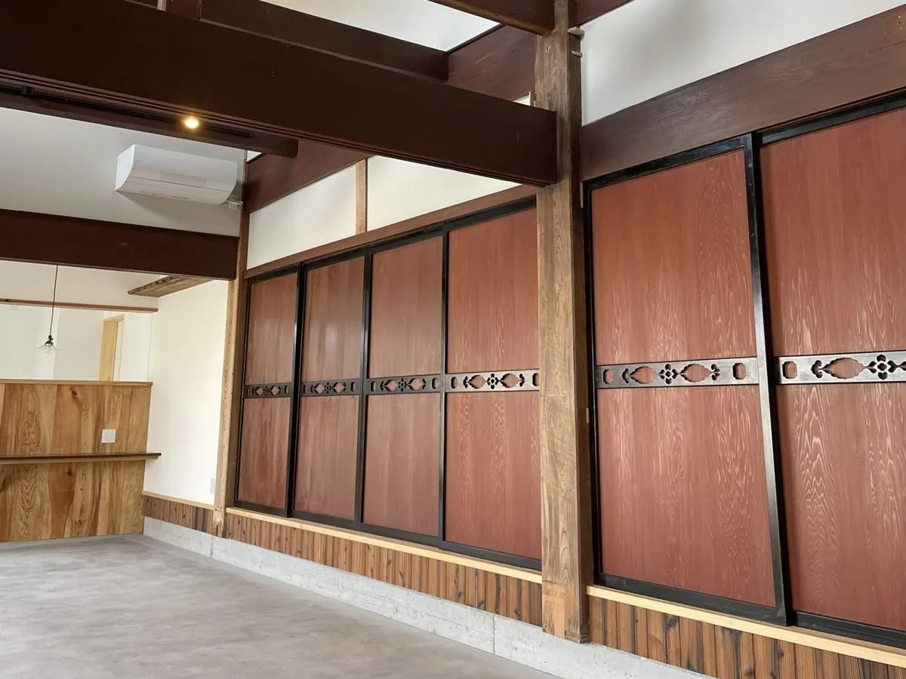
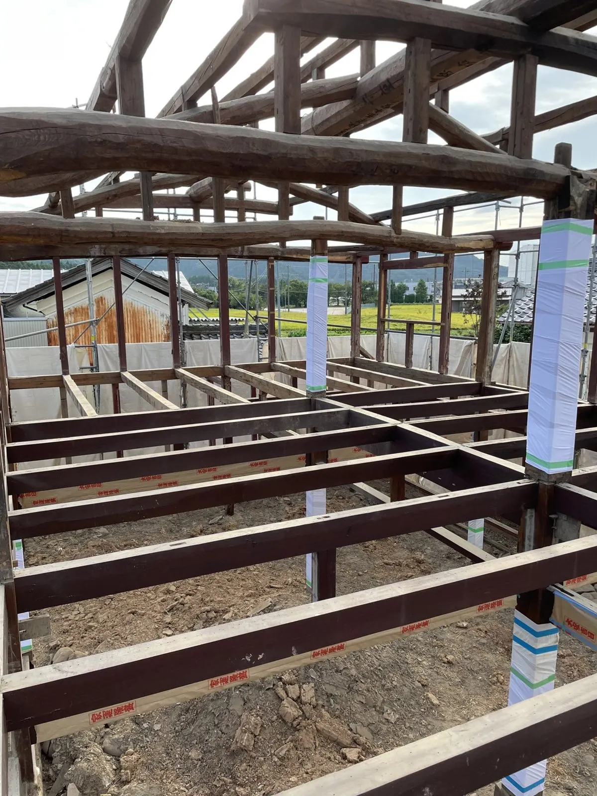
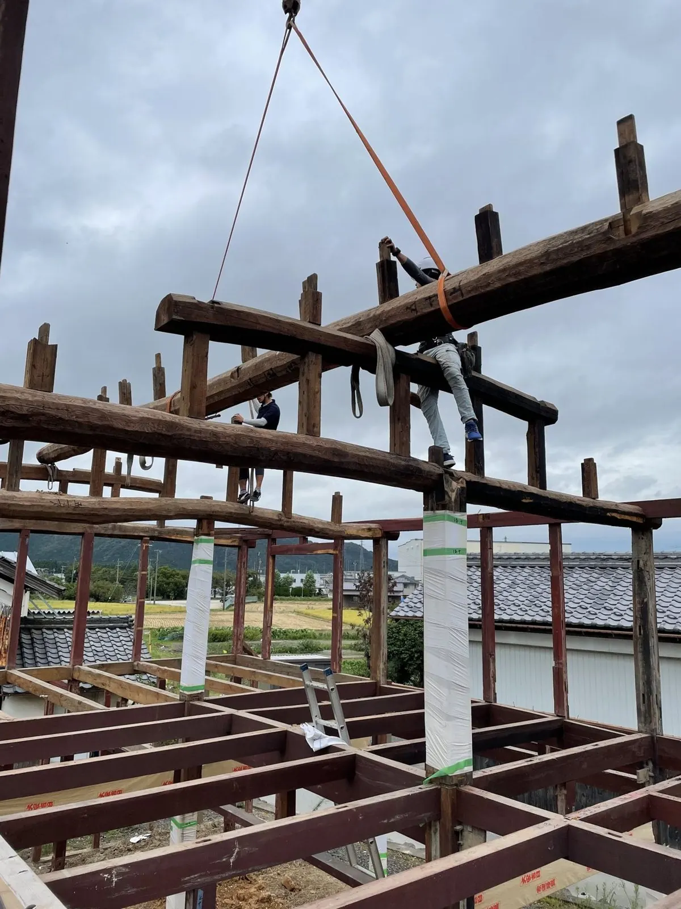
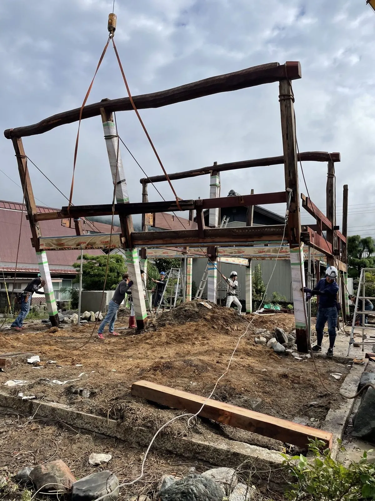
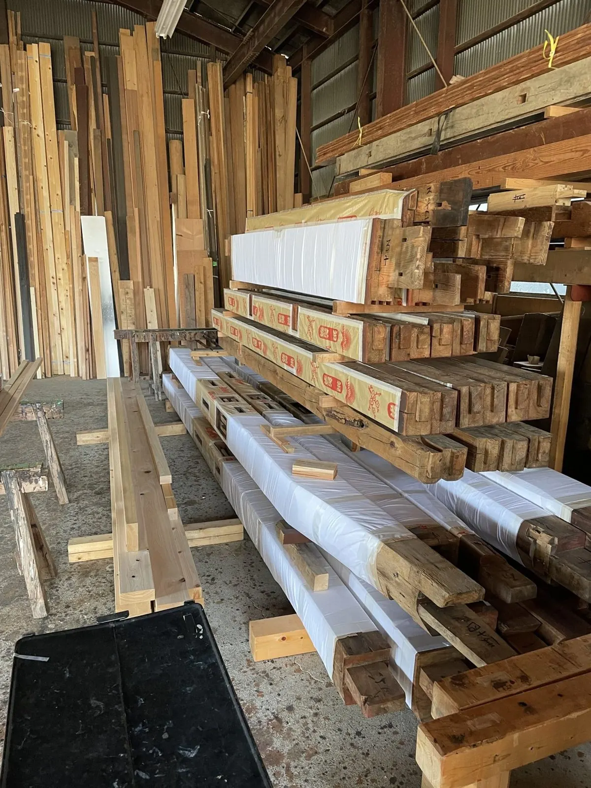
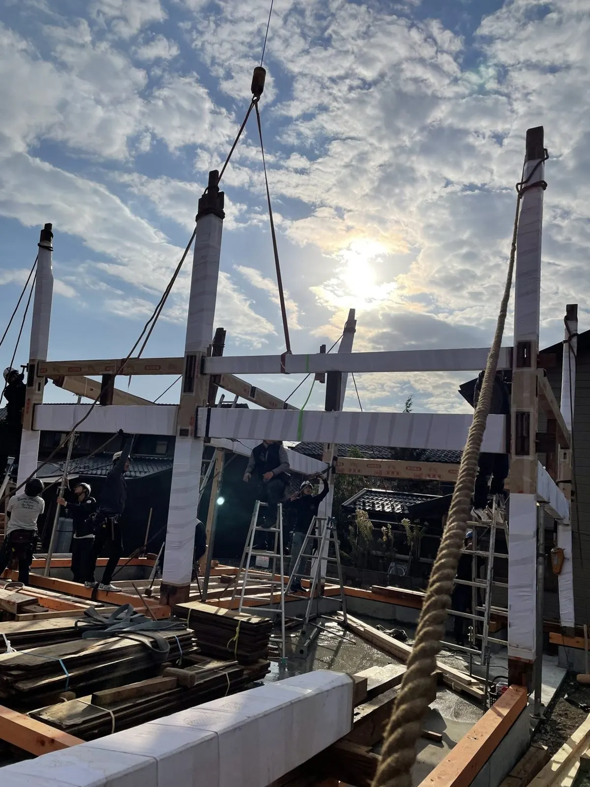
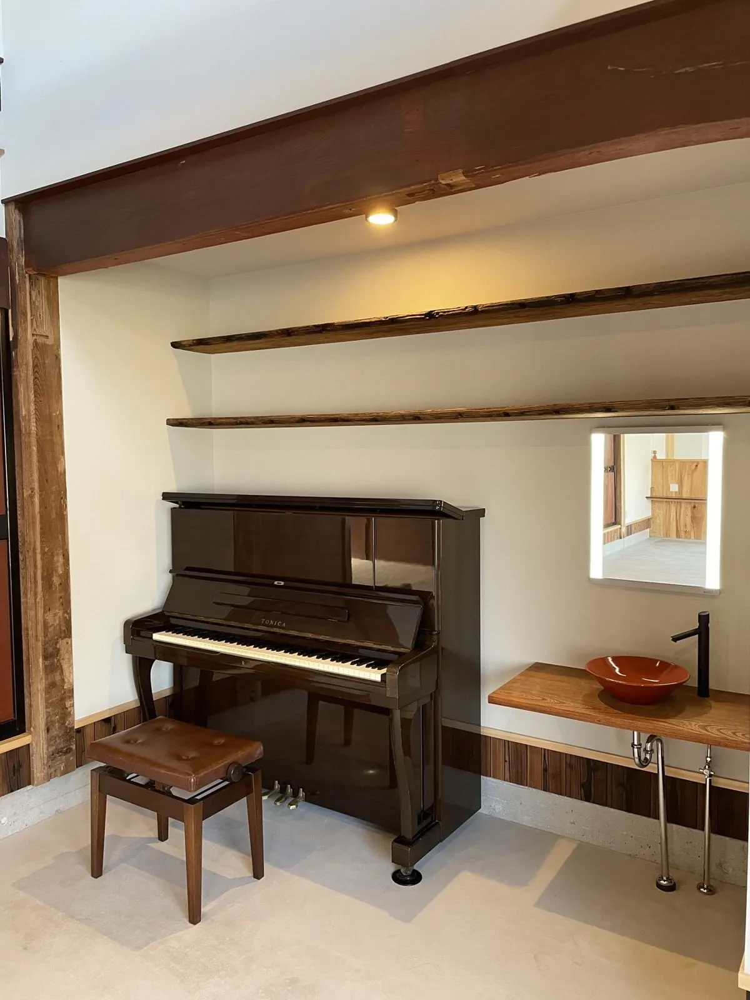

施工事例 ／ 移築
CASE ― 移築
米原市から長浜市へ、古民家の移築再生
ご実家を、住宅・店舗・貸しスペースなどの複合施設へ。古民家の利活用に地域で取り組まれている施主様の想いに、応えた工事です。

→

場所
米原市 → 長浜市
工事
移築・再生
竣工
2021年
期間・費用の目安
山下さん確認

→

PROCESS
工程と、仕上がり
01
再生解体
建物を、傷めないように解いていきます。

02
降棟
屋根の棟を下ろします。

03
組倒し
骨組みを、クレーンで倒して外します。

04
古材加工
古い材を、再び使える形に整えます。

05
建方
新しい場所で、骨組みを起こします。

06
完成
明るく、暮らしや仕事の場として。
